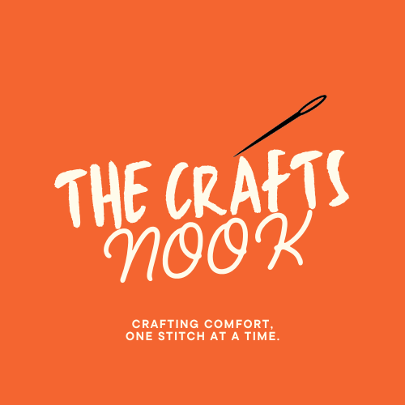

My Recent Posts?
My Blog

25 Sept 2024/ About Us
About Us!
At Craft's Nook, we are passionate about the art of crochet. Our platform is a haven for crochet lovers, offering a curated selection of beautifully handmade crochet products. Whether you’re looking for unique, handcrafted gifts, cozy home décor, or one-of-a-kind accessories, we have something special for everyone.
Read More...
25 Sept 2024/ Whats in the shop?
On Sale
Looking for amazing crochet finds at unbeatable prices? Check out our On Sale collection at Craft's Nook! We’ve handpicked a selection of stunning crochet items that are now available at discounted prices, but only for a limited time.
Read More...
25 Sept 2024/ Youtube Tutorials
Youtube Tutorials!
Whether you’re just starting your crochet journey or looking to refine your skills, our YouTube Tutorials have you covered! At Craft's Nook, we’re not just about offering beautiful crochet products—we’re here to help you create your own.
Read More...